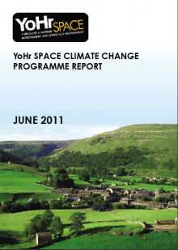

Local authority Leaders and Chief Executives recognised the critical importance of managing the risks and opportunities associated with climate change in Yorkshire and Humber and agreed a programme of work that commenced in February 2009. This report sets out the overall programme aims, objectives and outcomes for the YoHr Space Climate Change Programme. It contains details on each project and how to get in touch with the people that led the work as well as where to find the exhaustive range of tools and resources that have been developed.
Finally this report sets out an exciting legacy to YoHr Space with the development of the Climate Change Skills Fund that will provide comprehensive training and support to community groups, elected members, officers and stakeholders on the crucial role of planning and the built environment in reducing our carbon emissions and adapting to a changing climate.
Programme Aims
The YoHr Space Climate Change Programme aims to:
- Meet the needs of local areas to support delivery of programmes and services which address climate change and prepare for its impacts. In particular, this will involve helping local authorities to work with their partners to meet these challenges and deliver localtargets and wider objectives in a sustainable manner.
- Support local authorities to deliver their key actions from the Climate Change Plan for Yorkshire & Humber by building on individual local authority and partner actions to deliver
a greater outcome through joint working.
Programme Outcomes
The following outcomes have been developed to ensure joint delivery of key climate change performance measures:
- Highly visible political and senior management leadership on climate change across the region.
- Significant reduction in energy use and carbon emissions from the schools’ estate.
- Duplication of effort eliminated with local authorities naturally seeking collaboration on common climate change issues.
- A strong and supportive network of local authorities helping each other to reduce carbon emissions locally.
- Robust measures in place to reduce the impact of a changing climate, particularly flood risk.
Project Areas
- Leadership on climate change
- Taking forward climate change activity in schools
- Engaging the voluntary sector and businesses on combating climate change
- Understanding local areas adaptive action on climate change
- Carbon management
Downloads
Please download the 'YoHr Space Climate Change Programme Report ' (pdf)